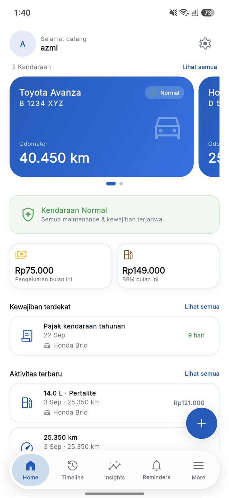
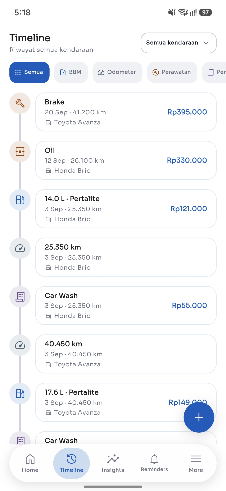
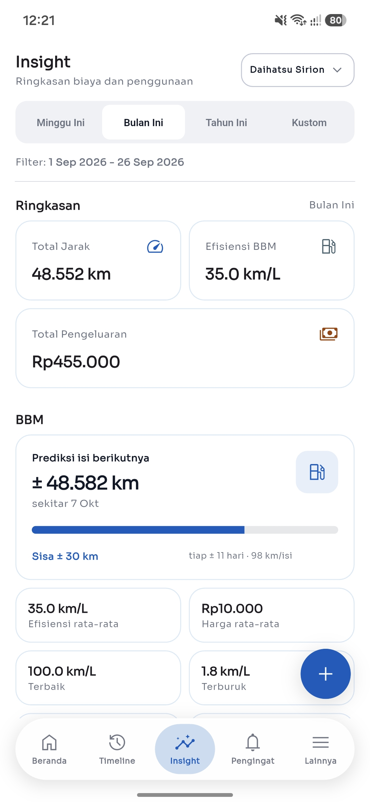
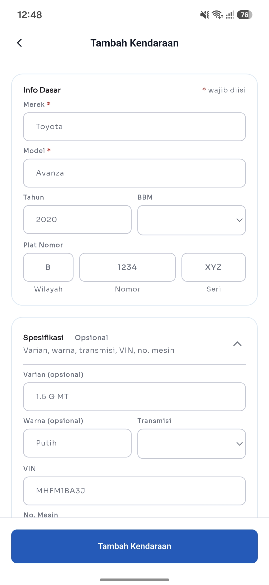
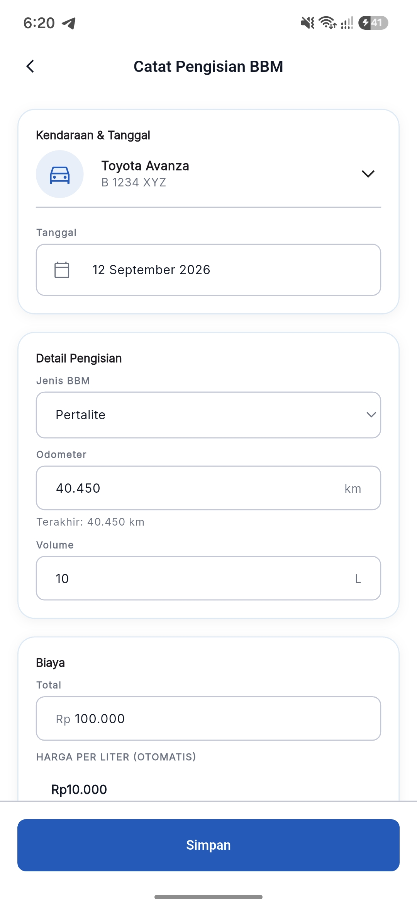

Kapan servis berikutnya? Sudah tercatat.
Odometer, BBM, servis, pajak, sampai asuransi tercatat rapi di satu aplikasi, di HP-mu sendiri.
GratisTanpa akunOffline penuh

Catatan mobil mudah sekali tercecer.
- Buku servis sering ditinggal di bengkel.
- Struk dan chat bengkel terkubur di antara chat lain.
- Jatuh tempo pajak baru teringat setelah lewat.
Akibatnya servis sering molor, dan kamu tidak pernah tahu berapa sebenarnya biaya kendaraan tiap bulan.
CarBuddy mengumpulkan semuanya. Setiap isi bensin, servis, dan kewajiban tercatat di satu timeline per kendaraan, dan aplikasi yang mengingatkan kamu sebelum tanggal H.

Semua yang perlu dicatat, sudah ada tempatnya.
Dibangun untuk pemakaian harian: cepat dicatat, gampang dicari, dan tidak pernah minta internet.
Pengingat yang datang sebelum telat.
CarBuddy menghitung mundur dari tanggal jatuh tempo, lalu mengirim notifikasi sesuai rentang yang kamu atur sendiri: pajak, asuransi, servis rutin, sampai ganti oli.
- Rentang pengingat diatur per kategori.
- Notifikasi lokal, tanpa server.
Pajak kendaraan tahunan Segera
Jatuh tempo 22/9 · Honda Brio · tersisa 9 hari
Oli
Jadwal berikutnya 18 November · Toyota Avanza
Insight yang jujur
Jarak tempuh, konsumsi km/L, dan total biaya per periode, dibandingkan dengan periode sebelumnya. Kamu tahu kapan konsumsi memburuk, bukan cuma merasa irit.

Odometer dan BBM
Catat km dan tiap isi bensin. Konsumsi dihitung dari data asli, bukan perkiraan.
Bebas jumlah kendaraan
Tambah beberapa mobil sekaligus. Tiap catatan ditandai milik kendaraan mana.
Pajak, asuransi, dan dokumen
Tanggal jatuh tempo tercatat, foto polisa atau STNK bisa dilampirkan langsung.
Backup satu file
Ekspor semua data ke satu file .carbuddybackup dan pulihkan di HP baru.
Lihat langsung layarnya.
Lima layar yang paling sering dipakai, dari beranda sampai menu modul.
Tiga langkah pertamamu.
Alur pertama pemakaian CarBuddy, dibawakan langkah demi langkah.
Tambahkan kendaraan
Isi nama, plat, dan odometer awal. Tidak ada akun yang diminta, catatannya langsung tersimpan di HP.
Catat isi bensin dan servis
Setiap catatan masuk ke timeline kendaraan, lengkap dengan biayanya. Konsumsi dihitung dari data asli, bukan perkiraan.
Biarkan pengingat bekerja
Atur rentang notifikasinya sekali. CarBuddy menghitung mundur dan mengingatkan sebelum jatuh tempo, tanpa server dan tanpa internet.


Data tinggal di HP kamu.
CarBuddy tidak punya server dan tidak meminta akun. Semua catatan tersimpan di database HP-mu sendiri, jadi aplikasinya tetap jalan kapan pun, di mana saja, tanpa sinyal.
Tanpa akun, tanpa login
Pasang, buka, langsung pakai. Tidak ada email yang diminta.
Bekerja offline penuh
Semua fitur jalan tanpa internet, dari catatan sampai grafik.
Tanpa iklan, tanpa telemetry
Tidak ada data yang dikirim ke mana pun, titik.
Pindah HP? Semua data diekspor jadi satu file .carbuddybackup, kirim lewat WhatsApp atau email, lalu pulihkan di HP baru dengan validasi otomatis.
Yang sering ditanyakan.
Di HP kamu sendiri. CarBuddy menyimpan semua catatan di database lokal (SQLite) di perangkat, tanpa server dan tanpa sinkronisasi otomatis ke mana pun.
Tidak. Tidak ada login, dan semua fitur jalan offline penuh. Internet cuma perlu kalau kamu mau mengirim file backup ke teman atau ke email.
Ya, gratis. Tidak ada iklan dan tidak ada pembelian di dalam aplikasi.
Buka Backup & Pulihkan, ekspor semua data jadi satu file .carbuddybackup, kirim filenya ke HP baru lewat WhatsApp, LINE, atau email, lalu impor di sana. Sebelum data lama diganti, file divalidasi dulu secara otomatis.
Bisa. Beberapa mobil bisa dicatat dalam satu aplikasi. Setiap catatan ditandai milik kendaraan mana, dan ringkasan di Beranda menunjukkan semuanya.
Indonesia dan Inggris, bisa diganti kapan saja dari pengaturan.
Mulai dari catatan berikutnya.
Tambahkan kendaraan pertamamu, catat satu pengisian BBM, dan biarkan pengingat CarBuddy yang ingat sisanya.
Tombol di atas membuka draf email ke pengembang, dan file APK dikirim balik ke emailmu.